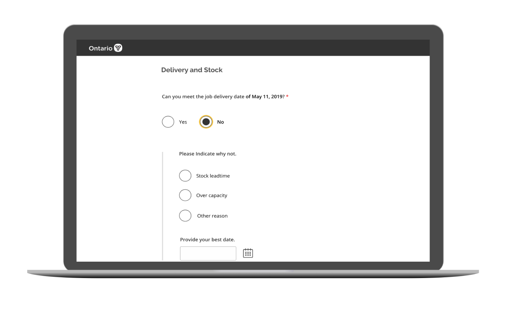
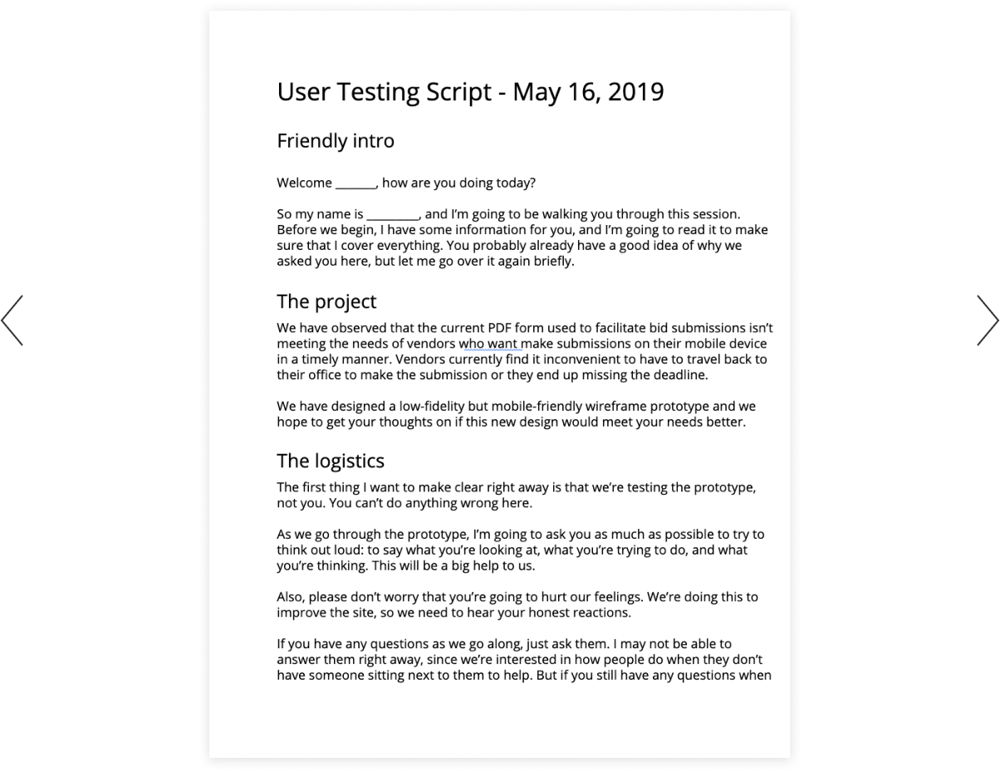
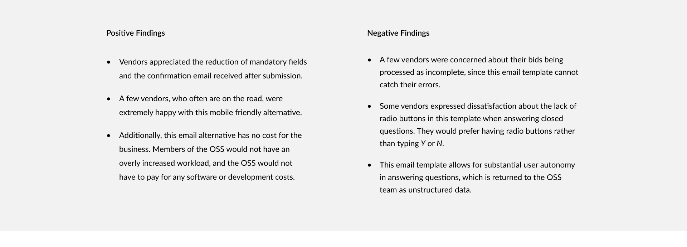
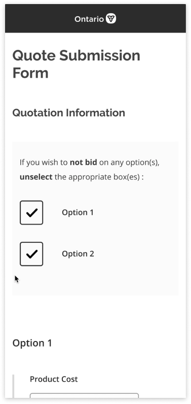

Bid Form
Transforming bid submissions for vendors of the Ministry of Government and Consumer Services.

TIMEFRAME
May 13-27, 2019
ROLE
Designer and researcher
TOOLS AND METHODS
Balsamiq, Figma, user interviews, usability testing
COMPANY
Ontario Digital Service Lab
Role
As one of two product designers at Ontario Digital Service Lab working on multiple projects, I wore many hats from project scoping, problem assessment, user recruitment, user research to ideation.
On this particular project, I collaborated closely with another product design intern to assess our problem, recruit vendors for user research, design our prototypes, facilitate user interviews and usability testing, and synthesize and present our findings to clients over the span of a two week sprint.
Background
The Government of Ontario’s enterprise-wide Vendor of Record (VOR) Program provides goods and services acquired by government ministries. The Ministry of Government and Consumer Services (MGCS) establishes agreements through open bidding, qualifying vendors to provide goods or services for a defined period, on specified terms and conditions. The Ontario Shared Services (OSS) facilitates this bidding process for the MGCS. The OSS team had approached our team at the Ontario Digital Service Lab to collaborate in improving the bidding process for vendors.
Problem
The OSS has observed that the current PDF form is not meeting the needs of vendors to make bid submissions when they are out of the office and do not have access to a computer. As a common result, vendors lose out on jobs because they miss the submission deadlines, and government ministries potentially lose out on the most affordable quotes.
How might we improve the bid submission process for vendors based on their turnaround time and overall ease of submission?
Evaluative Research
Original Form
The original bidding process required the OSS to fill out the first four fields, lock it, and then send it to each vendor via email along with a specification document detailing the service requested. Vendors must fill out the form on desktop and email the completed form to the OSS before the quote deadline.
Heuristic Analysis
We began our research process by evaluating the existing PDF form based off of the Nielson Usability Heuristics with the OSS team. For each of the 10 heuristics, I gave an explanation of specific aspects that were hindering the experience for vendors.
User Research
We recruited eight vendors to conduct research sessions for the duration of our two week sprint.
Each research session started off with a user interview to understand how vendors currently submit quotes to other public and private organizations. The user interview then led into a usability test of the prototype we had designed that week. At the end of the session, we asked for their positive and negative feedback regarding our prototype, and how our prototype compared to the original PDF bid form.
Week 1
Custom Mobile Webform
In week one, we reused most of the fields from the original PDF form in a low fidelity custom webform prototype that we designed in Balsamiq for mobile. We chose to design for mobile to ensure that the form would be multi-plaftorm accessible as we scale up to desktop. This low fidelity custom webform was designed with respect to constraints associated with Adobe Experience Manager (AEM), a content management system that the OSS was adamant about using.
Contraints of AEM
AEM does not have a database, which was problematic because each bid form needs to be customized based on unique job details that an OSS member would input before sending off to vendors. After brainstorming, we decided that an OSS member would have to pass these unique job details into the webform URL as parameters in chronological order. When the vendor opens the URL, they would see these fields pre-populated.
In terms of sharing this webform with vendors, an OSS member would provide a link to this form in the body of an email that has an attached specification document and unique job details.
Our goal for week 1 was to understand problems that vendors face in their user journey and determine which fields could be removed. Four vendors were recruited for user interviews and usability testing.
view usability testing script

Vendor Journey Map
From interviewing the four vendors about their experience going through the bidding process with the OSS, we pieced together a typical journey of a vendor who’s bid has been approved.
Moving Forward
We had to rethink the design of vendor authentication, since using vendor ID and email failed. Vendors do not remember their vendor ID, and expressed concern about their employees using a different email to fill out the form on their behalf. Providing quote information needed to be simplified because the prototype’s UI and content was poorly designed. Vendors fill out total cost per option, usually skipping product cost and shipping cost. Overall, vendors expressed that this prototype is a step in the right direction because of its accessibility.
On the business side, there were concerns about developmental cost and restrictions regarding storage of data. The lack of a database would translate to an increased workload for team members in the OSS. We decided to prototype two alternatives in week two and conduct a preference test with 4 different vendors.
-
An email template that requires the vendor to reply in-line to questions.
-
A webform built in the form builder of Ontario.ca's Drupal content management system.
view usability testing script
Week 2
Email Template
To address the problems faced in week 1, we proposed an email alternative. This method forgoes the vendor contact information required in the original process, since the vendor’s email response in-line allows the OSS team to authenticate them. The email alternative is multi-platform accessible. The number of touchpoints in filling out the form is reduced, since the bid form is now integrated within the email unlike a PDF form or web-form.
Email Prototype

Moving Forward
We decided to rule out the webform built by the form builder in Ontario.ca’s CMS due to its inability to send vendors confirmation emails detailing their successful submission and summary details. The email is a viable option with respect to business constraints and multi-platform accessibility, despite its inability to recognize errors. However, vendors had stated that they take the bidding process seriously and would rarely make any mistakes. Using these insights, we decided to spend time exploring how we could significantly improve the custom webform design from week 1, since the form builder within Ontario.ca’s CMS was no longer a viable option.
Solution
Taking into account the positive and negative feedback from all three of our prototypes, we designed an optimal high fidelity mockup of the webform seen in week 1 for the OSS team. This method is user friendly, multi-platform accessible, allows for confirmation emails and detects form field errors. This design was passed onto our development team to prototype.

Attach document
Option deselection
Error message
We added this feature to provide vendors autonomy in how they want to provide their quote. We improved the system status visibility by introducing a progress bar for document uploads. On the summary page of the form, vendors can view a list of all the documents that they have attached for their quote.
In this prototype, there were two requested options for the job posted. However, vendors may not be able to provide a quote for all options. To reduce the amount of scrolling, we introduced an option deselection feature that allows vendors to bypass all the fields of the options they wish to ignore.
Taking into account the positive and negative feedback from all three of our prototypes, we designed an optimal high fidelity mockup of the webform seen in week 1 for the OSS team. This method is user friendly, multi-platform accessible, allows for confirmation emails and detects form field errors. This design was passed onto our development team to prototype.
High Fidelity Prototype
Recommendation for Future Steps
Although the optimal solution for the vendors is the high fidelity custom webform shown above, we advised the OSS team pilot the email template as an immediate solution. Taking into account the negative feedback, the email template is still a substantial improvement from the original PDF form and has no development costs associated with it.
We recommended that OSS pilot the email template with several of their vendors. If there is dissatisfaction, the OSS team should invest resources into developing our prototype of the high fidelity custom webform, and test iteratively with a few vendors before launch.
Retrospect
These are my main takaways during the span of this project :
-
It is necessary to spend considerable time exploring implementation constraints and existing tools that you can leverage before ideating from scratch to save time. There is no value in reinventing the wheel if a suitable one already exists. I failed to realize this when we decided to design a new form to develop, rather than exploring low-cost alternatives, such as email and leveraging existing technological resources available to us.
-
Being neutral as a researcher is important and requires a lot of practice. I learned how to lead user interview and usability testing sessions effectively to gain valuable research to synthesize. However, after the research has been done and synthesized, it is important to take a stand with your insights and voice your opinion rather than being neutral.
-
The ability to communicate effectively is paramount to the process of procuring genuine and relevant user feedback. I realized this from the substantial number of stakeholder meetings and presentations I was a part of, and the user interviews and usabilitity testing sessions that I led. I am currently working on delivering my ideas and rationale with more clarity, and improving my conversational skills.